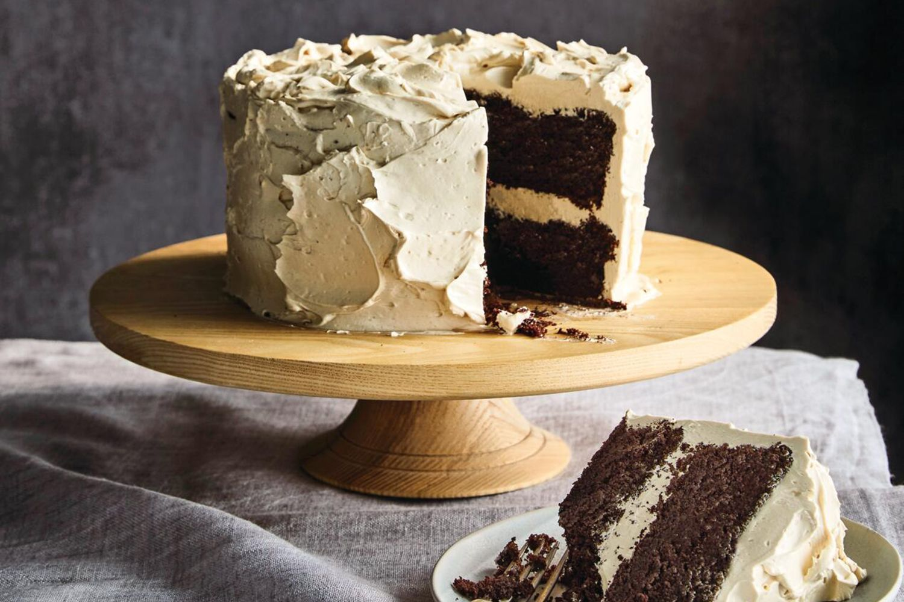
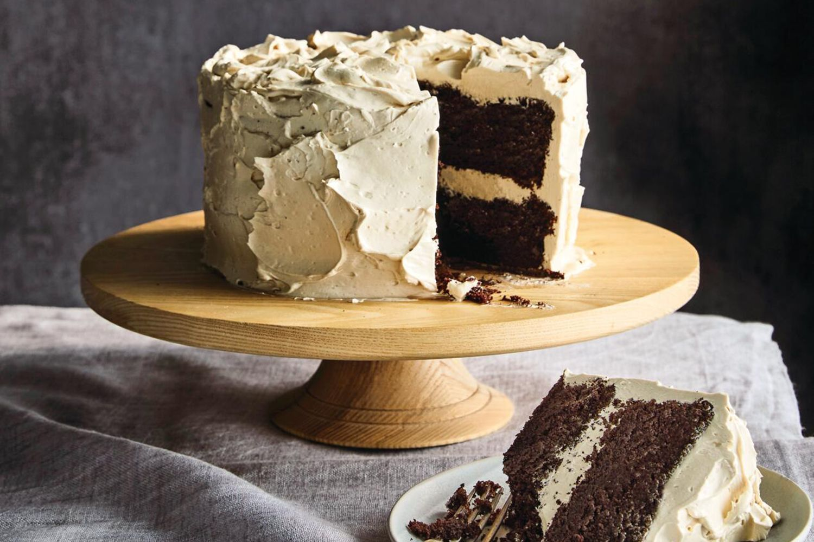
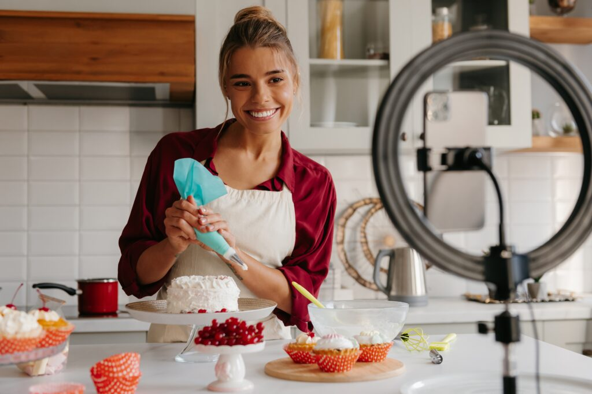
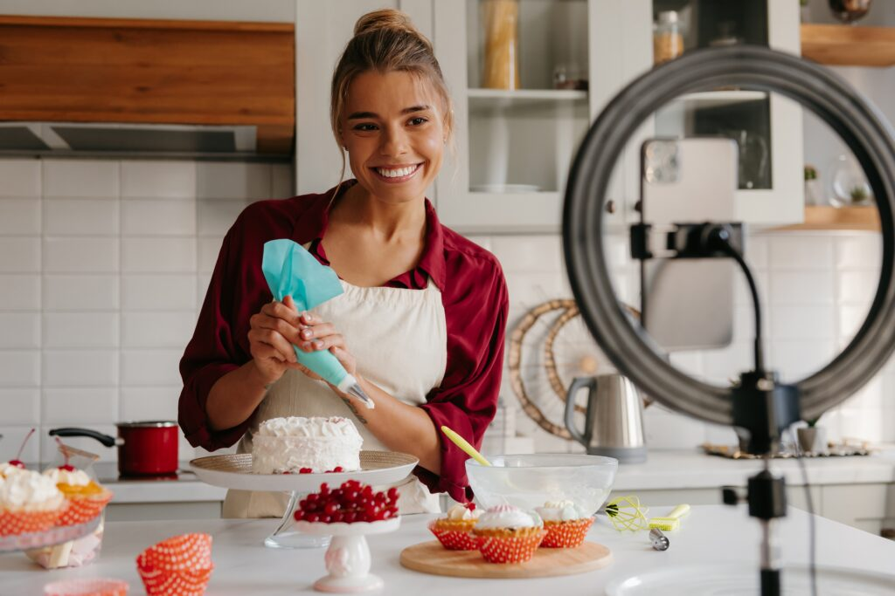

 

🍞 Projeto Imersão Fullstack
Bem-vindo ao paraíso das receitas!🥖 Este projeto saiu do forno durante a Imersão Alura, Aqui, misturei a farinha do HTML, CSS com o fermento do JavaScript essa experiência interativa. O 'recheio', o banco de dados, foi gerado de forma inteligente utilizando Node.js e inteligência artificial para gerar e organizar o banco de dados de forma dinâmica. Obrigada pela visita! 💛